A commutative ring  is Noetherian if every ideal is finitely
generated: for each ideal
is Noetherian if every ideal is finitely
generated: for each ideal  there are
there are
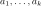
with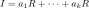
.
For a commutative ring the following are equivalent: (i) is
Noetherian; (ii) every ascending chain of ideals
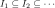
is eventually constant; (iii) every non-empty family of ideals has a maximal element.
(i) implies (ii): the union  of an ascending chain is an ideal,
hence generated by finitely many elements, all of which lie in some
of an ascending chain is an ideal,
hence generated by finitely many elements, all of which lie in some
 ; then
; then
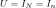
for .
.
(ii) implies (iii): if a non-empty family had no maximal element, one could choose, for each of its members, a strictly larger member, and recursively build a strictly increasing chain – contradicting (ii).
(iii) implies (i): given an ideal , let  be the
family of finitely generated ideals contained in , non-empty since
it contains
be the
family of finitely generated ideals contained in , non-empty since
it contains  . Let
. Let  be maximal in . If some
be maximal in . If some
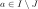
existed,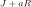
would be a finitely generated ideal inside and strictly larger; so 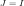
.A quotient of a Noetherian ring is Noetherian; so is any homomorphic image.
Ideals of  are the
are the
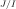
for ideals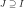
, by taking preimages under the surjective projection. If is generated
by then is generated by their classes. A
homomorphic image is isomorphic to a quotient by the homomorphism
theorem.
If is Noetherian then so is ![\(R[x]\)](m/ed66dab0437b00d764a53b6a4e98ac0990d25ef0.svg) .
.
Let
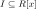
be an ideal, and suppose it is not finitely generated. Choose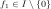
of least degree, and recursively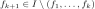
of least degree – possible, since is not generated by finitely many
elements. Let 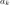
be the leading coefficient of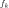
and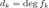
, so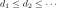
by the choice of least degree.The chain
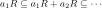
is eventually constant, so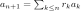
for some and
and 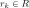
. Consider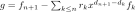
, which lies in and not in 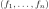
, since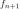
does not. But its coefficient of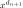
is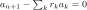
, so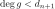
, contradicting the minimality in the choice of .
For a field  , the ring
, the ring
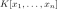
is Noetherian, and so is every quotient of it. Consequently any system of polynomial equations over has the same solution set as some finite
subsystem of it.
A field is Noetherian, having only the ideals and ; apply
Hilbert's theorem times, and the previous proposition for
quotients. Given a family  of polynomials, the ideal it
generates is generated by finitely many polynomials, each a combination
of finitely many members of ; those finitely many members
generate the same ideal, hence have the same common zeros.
of polynomials, the ideal it
generates is generated by finitely many polynomials, each a combination
of finitely many members of ; those finitely many members
generate the same ideal, hence have the same common zeros.
The last sentence is the reason the chain condition matters outside algebra: an algebraic set is cut out by finitely many equations even when it is defined by infinitely many, so the objects of algebraic geometry are finite data. Note also what the proof of Hilbert's theorem does not do – it produces no generators, only a contradiction from their absence, which is characteristic of the whole subject after Hilbert.